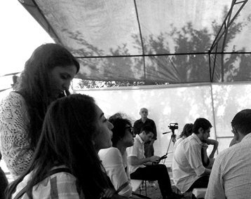

ИЗОЛЯЦИЯ АРМЕНИИ. ФАКТОР РИСКА
Слушание состоялось 25 сентября 2015 года в Текали, на стыке границ трех южнокавказских республик.
В рамках проекта «Символический суд по правам человека», при поддержке Национального фонда демократии (США).
Тема была выбрана по заявке Самвела Исраеляна. После выступления докладчиков из Азербайджана, Армении и Грузии на голосование был поставлен вопрос: Является ли изоляция Армении фактором риска в регионе? Присутствующие единогласно проголосовали - да.
На обсуждении участвовали жители Баку, Еревана, Тбилиси и приграничных сел Азербайджана, Армении, Грузии.
В рамках проекта «Символический суд по правам человека», при поддержке Национального фонда демократии (США).
Тема была выбрана по заявке Самвела Исраеляна. После выступления докладчиков из Азербайджана, Армении и Грузии на голосование был поставлен вопрос: Является ли изоляция Армении фактором риска в регионе? Присутствующие единогласно проголосовали - да.
На обсуждении участвовали жители Баку, Еревана, Тбилиси и приграничных сел Азербайджана, Армении, Грузии.
ПОЛИТИЧЕСКАЯ И ЭКОНОМИЧЕСКАЯ ИЗОЛЯЦИЯ АРМЕНИИ. ПОСЛЕДСТВИЯ
Самвел Исраелян
Трудно предсказать в какую катастрофу для обеих республик выльется новая война. Неминуемые огромные потери мирного населения и военных в результате применения тяжелого оружия, которого очень много накопилось по обе стороны конфликта, новая волна беженцев, гуманитарная катастрофа, возможная потеря государственности в результате вмешательства России. Остаётся надеяться на благоразумность народов – армянского и азербайджанского, способных предотвратить чудовищную катастрофу, последствия которой не смогут преодолеть даже следующие поколения. На разумность и нравственность руководителей, увы, надежды уже нет.
Доклад полностью
ОТВЕТ САМВЕЛУ ИСРАЕЛЯНУ: ЦЕННОСТИ ЗЕМЛИ И КРОВИ
Зардушт Ализаде
Но если нация ставит перед собой задачу, предположим, расшириться территориально, объединиться с частями своего народа, которые живут на территории другого государства, то уже заведомо можно сказать, что он ставит себя в такую ситуацию, когда она будет подвергнут изоляции и будет самоизолироваться. Это был стратегический выбор народов Южного Кавказа, когда мы поддались на националистические уловки Кремля, и забыли о том, что наступает двадцать первый век, совсем другое время.
Доклад полностью
ГИБРИДНЫЙ ИЗОЛЯЦИОНИЗМ АРМЕНИИ, ЕГО ПОСЛЕДСТВИЯ ДЛЯ ГРУЗИИ И ЮЖНОГО КАВКАЗА
Георгий Тархан-Моурави
Экспорт авторитаризма и олигархической системы правления, ослабление процесса демократизации - наиболее разрушительные последствия российской политики в регионе, чему конечно способствует наличие ее «стратегического партнера», не всегда способного противостоять давлению Москвы, даже вопреки собственным интересам.
Доклад полностью
ПОСЛЕДСТВИЯ ПОЛИТИКО-ЭКОНОМИЧЕСКОЙ ИЗОЛЯЦИИ АРМЕНИИ
Георгий Тумасян
Ослабление Армении вызвано существенным ослаблением главной опоры ее внешней и внутренней политики - России. Это связанно с некоторыми конкретными факторами, которые в среднесрочной и долгосрочной перспективе вызывают изоляцию Армении в регионе, как единственного союзника России, которая также идет по пути изоляции.
Доклад полностью